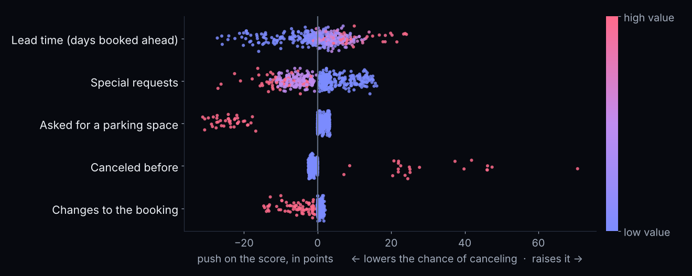
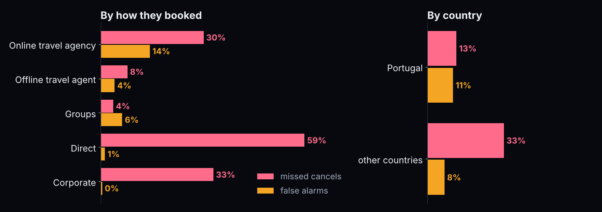

Five questions your boss will ask before trusting your model
Break at 6:05. Tonight you play first: four small games, one before each idea.
A committee of 300 trees that vote.
A relay team, with early stopping.
AUC: pick one guest who canceled and one who stayed.
The model gives the canceler the higher score about 94 times in 100.
cross-validation
hyperparameter tuning
SHAP
conformal prediction
slices · model card
One idea all night: a score is a claim. Check it before you trust it.
Or did the model just get an easy exam?
Is she a 94.5 student? Or did the exam ask the questions she studied?
One random split set aside 6,000 bookings. A different shuffle sets aside different ones.
So let's reshuffle eight times. Same model, same data, a different exam each time.
We told the boss 0.945. Guess where the next score lands, then reshuffle the exam. Do it ten times.
Scan with your phone camera, or type the link.
Play first. We name the tool after.
Lowest 0.938, highest 0.947. A gap of 0.009, from the shuffle alone.
Last week: "boosting beats the forest by 0.003". Was that real, or luck?
Cut the training bookings into 5 parts (folds). Every part takes one turn as the exam.
Report the average and the spread. The test bookings stay locked away.
| exam 1 | exam 2 | exam 3 | exam 4 | exam 5 | average | |
|---|---|---|---|---|---|---|
| 🌲 random forest | 0.935 | 0.936 | 0.936 | 0.942 | 0.939 | 0.938 |
| 🚀 boosting | 0.939 | 0.942 | 0.938 | 0.945 | 0.943 | 0.941 |
| boosting wins by | +0.004 | +0.006 | +0.002 | +0.003 | +0.003 | +0.003 |
The honest way to say it: "0.941, give or take 0.003."
One win can be luck. Five out of five is a pattern.
A teammate ran 5-fold cross-validation and got
Her report says: "Our model scores 0.94."
What is wrong, and what should she write?
Shuffle all bookings. 2015, 2016 and 2017 are mixed in training and in the exam.
Learn from the past. Get judged on a future the model has never seen.
So: train on arrivals in 2015–2016. Exam: every booking that arrives in 2017.
"How well does it fill gaps in data it already knows?"
"How well will it do next year?"
Ask: "When this model is in use, what will be new to it?" Then hold out exactly that.
| in real life, what is new? | so hold out… | the real name |
|---|---|---|
| future dates | the most recent period | TimeSeriesSplit |
| new customers (many rows each) | whole customers | GroupKFold |
| nothing special | random parts | StratifiedKFold |
Turning the dials, honestly
learning_rate · max_leaf_nodes · min_samples_leaf
5 × 5 × 5 = 125 cakes. Thorough, slow.
Usually lands close to the best, for a tenth of the work.
To find the best cake you bake several and taste them. But who tastes?
# the values each dial is allowed to take menu = {'learning_rate': [0.03, 0.05, 0.1, 0.2, 0.3], 'max_leaf_nodes': [7, 15, 31, 63, 127], 'min_samples_leaf': [5, 10, 20, 50, 100]} search = RandomizedSearchCV(new_boost(), menu, n_iter=12, # try 12 random recipes cv=3) # taste each one with 3 exams search.fit(X_tr, y_tr) # training bookings only
12 recipes × 3 exams = 36 models. About a minute.
cross-validation score
step 0.05 · 63 leaves · min 10
learns where to look next
Winners: small steps, bigger trees. Just what the golf picture said.
Clean data, no leaks and the right exam matter far more than the dials.
These models know nothing. Your mission: make one of them look like a real model (0.65 or more).
Scan with your phone camera, or type the link.
Play first. We name the tool after.
the average guesser: a coin flip
it looks like it knows something!
it was never good. It was lucky.
Try many things, keep the best score on the same exam, and you keep the luckiest.
That is the public leaderboard story from last week.
default dials
dials chosen by cross-validation
A small, real gain, and no surprise on exam day.
A receipt for every prediction
Each dish adds to the bill. The lines add up to the total.
Each clue adds or subtracts points. The lines add up to this guest's score.
How much is each clue "worth"? Like splitting a taxi fare fairly among friends.
The idea is from Lloyd Shapley, Nobel prize in economics.
You are the model. For each clue: does it make this guest more or less likely to cancel? Then reveal.
Scan with your phone camera, or type the link.
Play first. We name the tool after.
The first booking from the game. Pink pushes the chance of canceling up, blue pushes it down.
"Arriving in 2017": the model learned that 2017 bookings cancel more. The world moves (Question 1).
"Every booking starts at 37%. This one scores 87% mainly because the guest booked 312 days ahead, made no special requests and came through an online travel agency. One thing pulls the other way: they already changed the booking twice."
One receipt, one guest.
All the receipts together. Next.
Average push on the score, in points (up or down). The other 20 clues each move it only a little.

Right = pushed toward "cancels". Pink = a high value of that clue. Read one row at a time.
canceled · 26,328 bookings
canceled · 3,632 bookings
Teaching the model to say "I'm not sure"
Plus a promise: "The truth is inside my answer at least 90% of the time."
Like a weather forecaster with a track record you can check.
Your staff can check 600 bookings by hand. What is the strongest promise you can afford?
Scan with your phone camera, or type the link.
Play first. We name the tool after.
Bookings the model never trains on.
calibration set
1 − the chance it gave to what really happened.
90% of its past surprises were smaller than this.
One answer kept: it commits. Both kept: "not sure".
prediction set
| the model says | surprise if it cancels | surprise if it stays | the answer | |
|---|---|---|---|---|
| Booking A | 80% cancel | 0.20 ✓ | 0.80 ✗ | ❌ "will cancel" |
| Booking B | 50% cancel | 0.50 ✓ | 0.50 ✓ | 🤔 "not sure" |
0% ← the model's chance of canceling → 100% · between 42% and 58%: "not sure". The zone from the game.
On 6,000 new bookings the model commits on more than 9 in 10.
The rest, about 1 in 15: "not sure". That is the short list for a human.
| the promise | kept | says "not sure" | right when it commits |
|---|---|---|---|
| 90% | 90% | about 1 in 15 | 89% |
| 95% | 95% | about 1 in 5 | 93% |
| 99% | 99% | almost half | 98% |
How sure do you need to be? How many bookings can your staff check by hand?
The model gives you the menu. You choose.
Slices, and the label on the box
"The class average is a B+." Fine. Unless one group is failing.
| the mistake | in plain words | real name | all guests |
|---|---|---|---|
| missed cancel | we said "stays", the guest canceled → an empty room | false negative | 20% |
| false alarm | we said "cancels", the guest came → a good guest, badly treated | false positive | 8.5% |
Now the same two numbers, group by group.

Among guests who did show up, a guest from Portugal was about 1.5× as likely to be flagged as a canceler.
In lending, hiring, insurance and health care, regulators require this check.
A model card is not marketing. The ⚠️ lines are the most valuable lines on the page.
| what we said | the real name | what it means |
|---|---|---|
| five exams | k-fold cross-validation | every part takes one turn as the exam |
| a dial | hyperparameter | a setting you choose before training |
| the receipt | SHAP values | each clue's push, adding up to the score |
| the track-record pile | calibration set | held-back data to measure surprise |
| "stay", "cancel", "not sure" | prediction set | the answers the model cannot rule out |
| the promise | coverage | how often the truth is inside the answer |
| a group of guests | slice | a part of the data you check separately |
Next Monday: learning without answers. Segments, structure and anomalies.